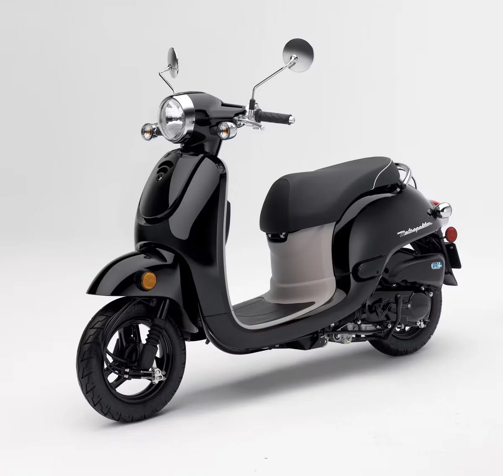
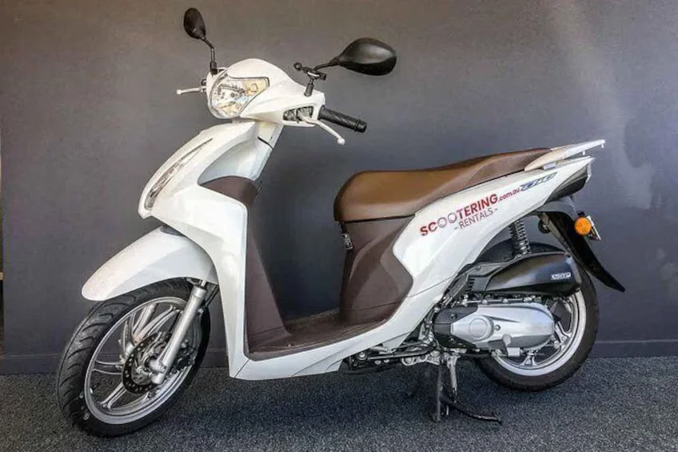
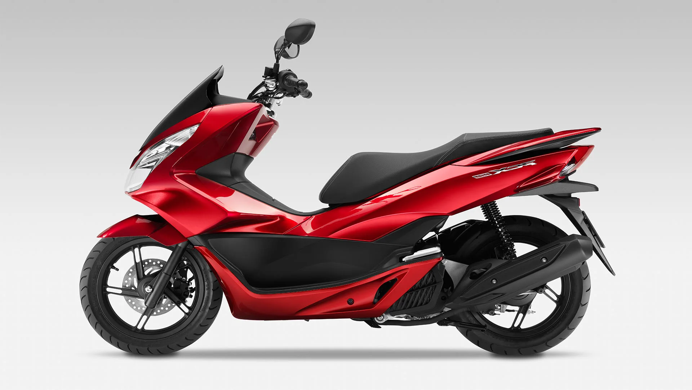
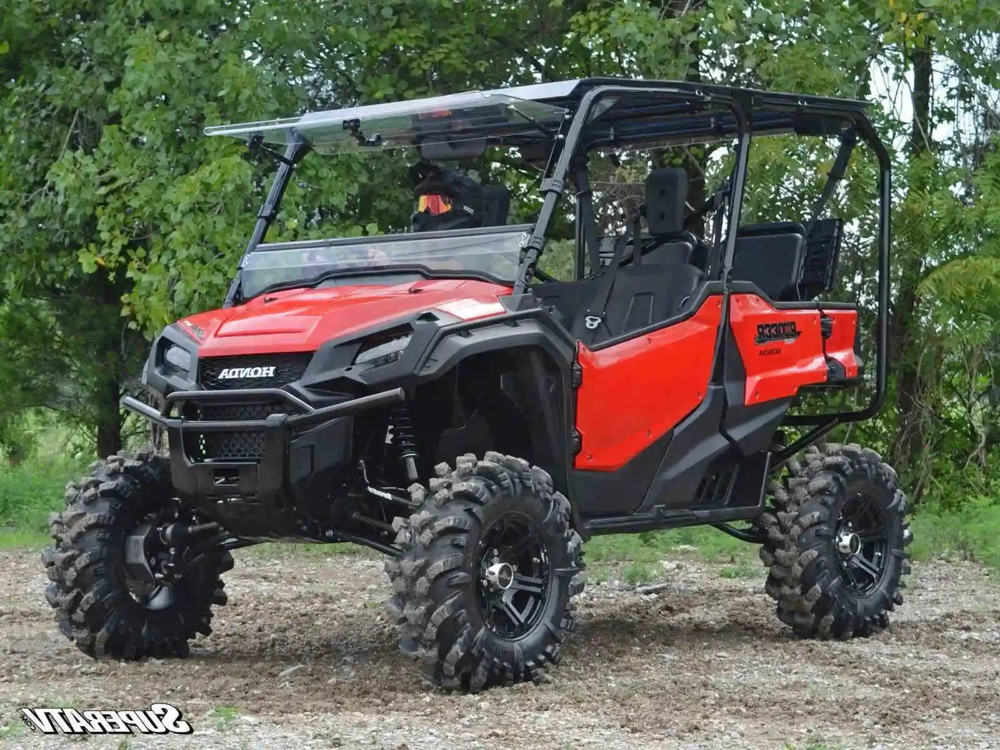
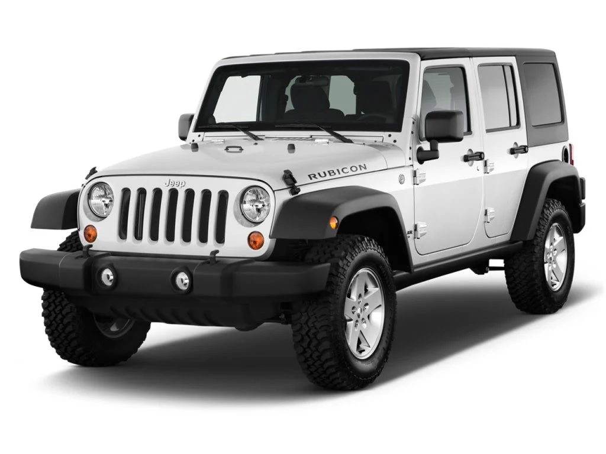
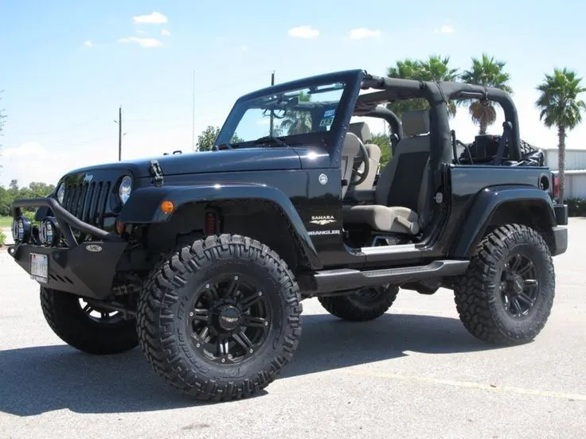

X
Today's high temperature: °F
Current Weather
Loading...
Loading...
Loading...
Next Day Forecast (15:00)
Loading...
Weather Details
Honda Motor Scooters:
Honda Metropolitan (49cc):
Engine: 49cc
Capacity: Suitable for 1 person
Description: A compact and efficient scooter ideal for navigating narrow streets and exploring the island.

Honda Dio (110cc):
Engine: 110cc
Capacity: Suitable for 2 persons
Description: A slightly larger scooter with enough power to accommodate two riders comfortably. Great for exploring the island together.

Honda PCX150 (149cc):
Engine: 149cc
Capacity: Suitable for 2 persons
Description: A more powerful scooter designed for longer rides and carrying two passengers with ease. Perfect for exploring the island's scenic routes.

Side-by-Side ATVs:
Side-by-Side ATVs:
Honda Pioneer 1000:
Capacity: Suitable for 4 persons
Description: A versatile and rugged side-by-side ATV capable of carrying up to four passengers. Ideal for off-road adventures and exploring Cozumel's interior terrain.

Jeeps:
Jeep Wrangler - 4 door manual with A/C:
Capacity: Suitable for 5 persons
Description: A spacious four-door Jeep Wrangler equipped with manual transmission and air conditioning. Perfect for larger groups or families looking to explore the island comfortably.

Jeep Wrangler - 2 door - open air - manual:
Capacity: Suitable for 4 persons
Description: A classic two-door Jeep Wrangler with open-air capabilities and manual transmission. Ideal for smaller groups or couples seeking adventure on Cozumel's roads and trails.
